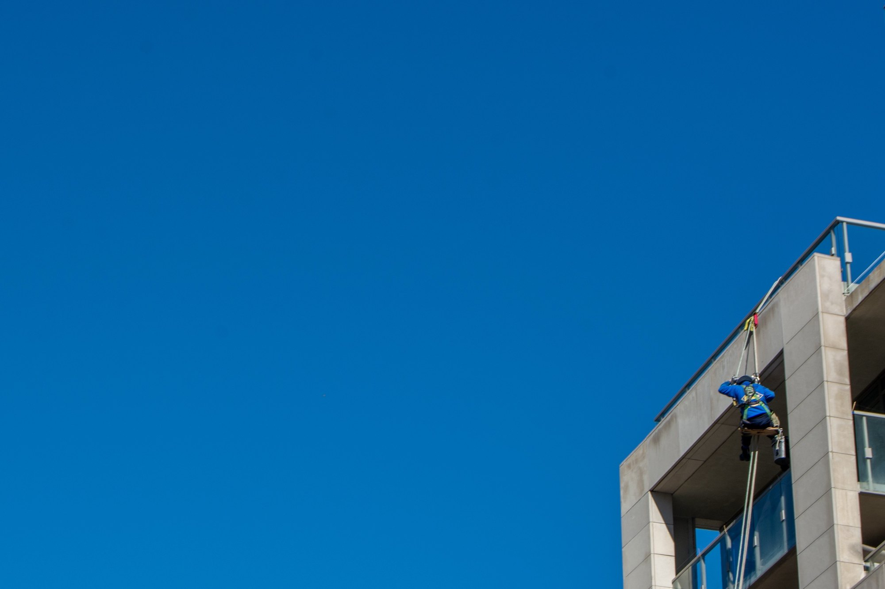
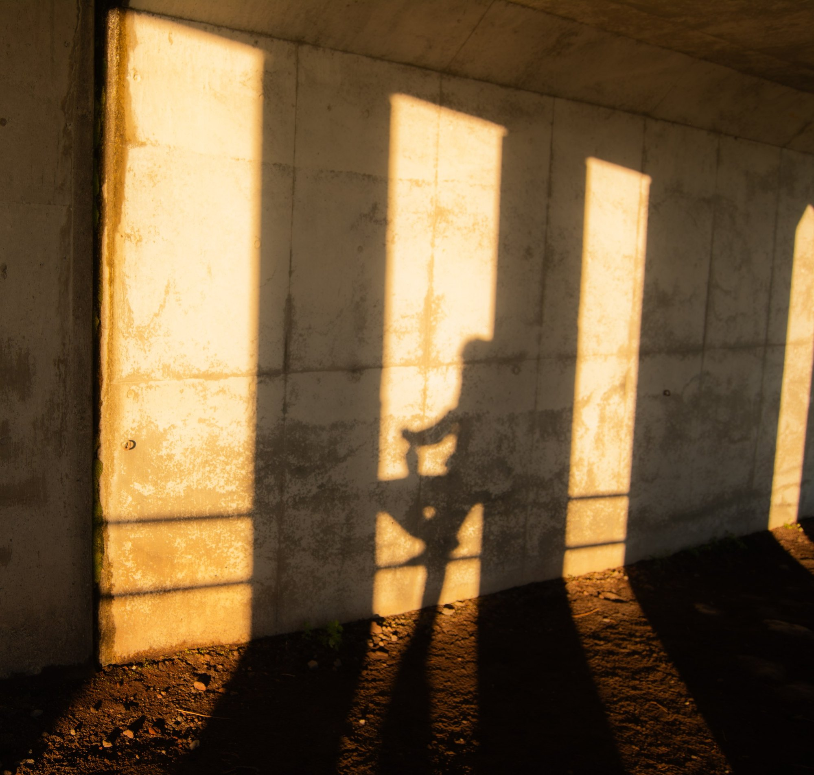
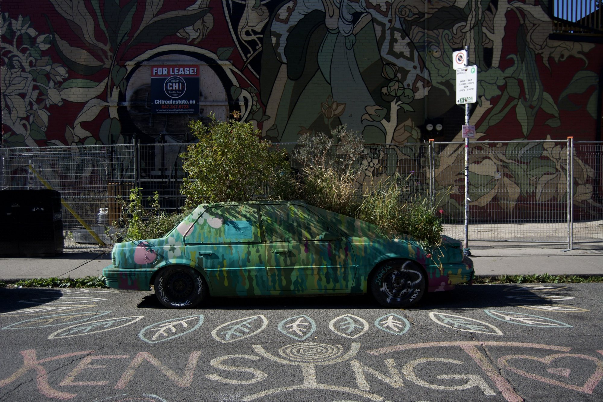
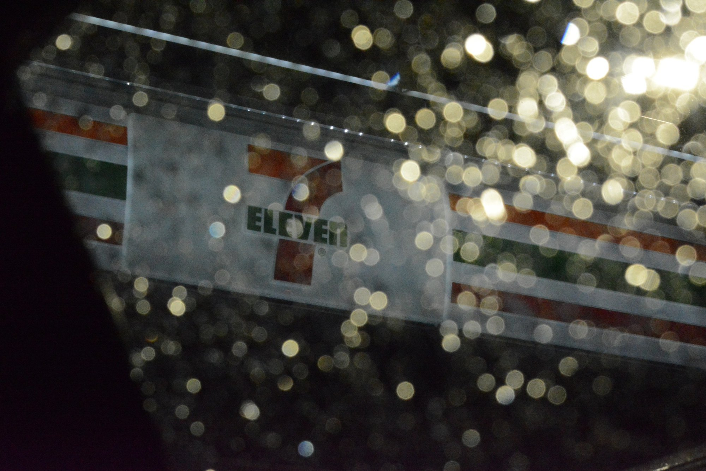
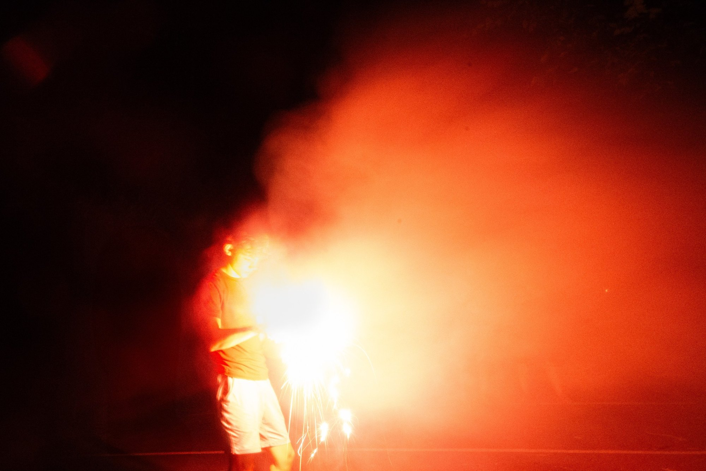

One new frame every other week.


I took this under an underpass when the sun was low and coming in from the side, so the light came through the gaps and laid stripes of warm light across the concrete wall. The repeating light and dark bars create pattern and rhythm, and my own shadow with the camera up lands inside the middle stripe, which makes it the point of emphasis. The golden color against the cool gray concrete creates contrast, and the long angled shadows on the ground only happen at this time of day. Instead of photographing the sunset itself, I wanted to show what golden hour light does to an ordinary wall.
Nikon D7100 · 1/500 · f/4.5 · ISO 400

This car isn't going anywhere anymore. It's been painted over and turned into a planter, with plants growing out of the roof and trunk, which is what made it feel forgotten to me. I shot it from the side with the car across the middle of the frame and used layering: the chalk "Kensington" and leaf drawings on the street in the foreground, the car in the middle ground, and the fence, mural and "For Lease" sign in the background. The bright colors and hard natural light show every texture, and the empty storefront sign adds to the feeling that the whole spot was left behind.
Nikon D7100 · 1/1000 · f/3.8 · ISO 100

I took this through a rain-covered car window at night and focused past the glass onto the 7-Eleven sign, so every drip on the window turned into a soft circle of light. The drops become a pattern that covers the whole frame and gives it a bubbly texture, while the sign's stripes add diagonal lines and a little red, orange and green. I left the dark edge of the car on the left as a frame, so it feels like you're sitting inside looking out. The artificial light and low-key setting make the water the brightest part of the photo, which is how I wanted to show the word drip.
Nikon D7100 · 1/800 · f/13 · ISO 10159

I shot this with a 2.6 second exposure, so the firework's light had time to soak into the smoke and turn the whole cloud red. The warm reds and oranges against the black, low-key background create strong contrast, and the brightest spot, the white-hot core by his hands, becomes the emphasis. I kept the person on the left side and let the smoke take up the rest of the frame, which gives it movement and makes the glow feel like it's spreading out. The soft texture of the smoke and the sparks dripping toward the ground make the air itself look hot.
Nikon D7100 · 2.6s · f/22 · ISO 4000